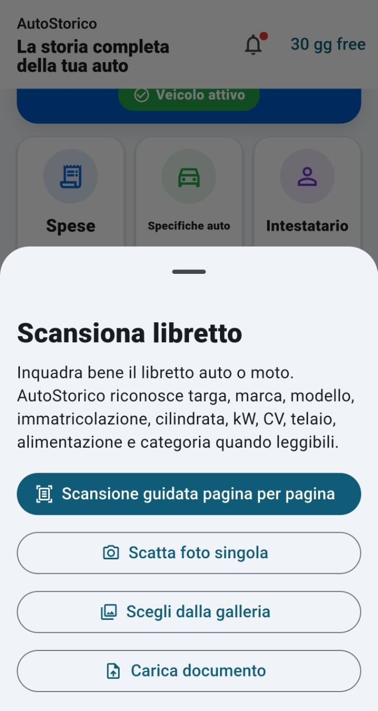
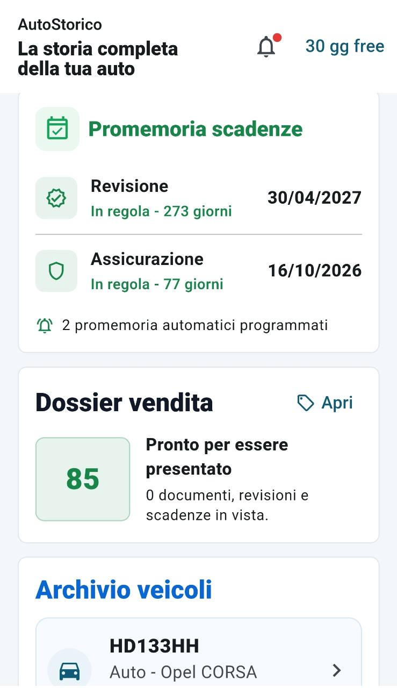
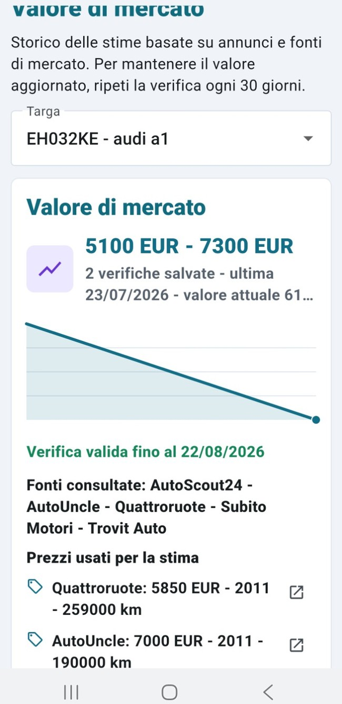

Dati e libretto digitale
Organizza i dati del veicolo e importa le informazioni dal libretto.
L'APP PER LA TUA AUTO
Scopri quanto può valere la tua auto, confronta i valori di mercato e raccogli in un unico posto dati, interventi, spese, documenti e chilometri.

Ricevute, fotografie e appunti sparsi rendono difficile ricordare tutto ciò che riguarda un'auto.
AutoStorico li trasforma in una storia digitale ordinata, consultabile quando serve.TUTTO IN UN UNICO POSTO
Uno strumento semplice per gestire l'auto ogni giorno e conservare informazioni utili nel tempo.
Organizza i dati del veicolo e importa le informazioni dal libretto.
Registra tagliandi, riparazioni, chilometri, costi, ricevute e documenti.
Ricorda revisione, assicurazione, bollo e le scadenze personali dell'auto.
Ottieni una fascia orientativa, confronta il mercato e segui le verifiche nel tempo.
COME FUNZIONA L'APP
Le schermate reali dell'app sono disposte lungo la pagina: accanto a ognuna trovi una spiegazione chiara di ciò che puoi fare.

LIBRETTO DIGITALE
Fotografa le pagine, scegli un'immagine dalla galleria oppure carica un documento. AutoStorico riconosce i principali dati leggibili del veicolo e ti aiuta a conservarli in modo ordinato.

SCADENZE SOTTO CONTROLLO
Le date importanti restano sempre in evidenza. Puoi vedere quanti giorni mancano e organizzarti in anticipo, senza cercare tra documenti o vecchi messaggi.

STIMA PERSONALIZZATA
Avvia una verifica basata su modello, anno, chilometri, alimentazione, stato del veicolo, lavori e revisioni registrate, insieme ai dati di mercato disponibili online.

ANDAMENTO NEL TEMPO
Consulta la fascia minima e massima, conserva le verifiche effettuate e osserva come cambia il valore nel tempo. La schermata mostra anche le fonti considerate.
Le quotazioni sono stime orientative per la vendita tra privati e non sostituiscono una perizia ufficiale.
Con il dossier di vendita puoi presentare in modo ordinato gli interventi registrati e valorizzare la cura dedicata al veicolo.
IDEATA DA GIACOMO ABBATE
Scarica AutoStorico e inizia a organizzare manutenzioni, documenti, costi e scadenze.
Scarica su Google Play